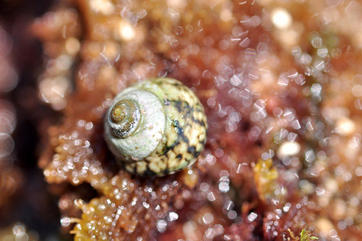
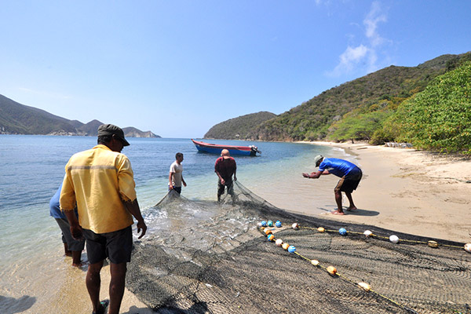

<ons-page>
    <ons-navigator title="Navigator" var="myNavigator">

        <ons-toolbar modifier="opacity">
            <div class="left">
                <ons-toolbar-button ng-click="menu.toggle()"><ons-icon icon="ion-navicon-round" fixed-width="false"></ons-icon></ons-toolbar-button>
            </div>
            <div class="center">Santa Marta</div>
        </ons-toolbar>

        <div class="app-page">
            <!-- Start cssSlider.com -->
            <div class='csslider1 autoplay '>
                <input name="cs_anchor1" id='cs_slide1_0' type="radio" class='cs_anchor slide' >
                <input name="cs_anchor1" id='cs_slide1_1' type="radio" class='cs_anchor slide' >
                <input name="cs_anchor1" id='cs_slide1_2' type="radio" class='cs_anchor slide' >
                <input name="cs_anchor1" id='cs_play1' type="radio" class='cs_anchor' checked>
                <input name="cs_anchor1" id='cs_pause1' type="radio" class='cs_anchor' >
                <ul>
                    <div style="width: 100%; visibility: hidden; font-size: 0px; line-height: 0;">
                        
                    </div>
                    <li class='num0 img'>
                        
                    </li>
                    <li class='num1 img'>
                        
                    </li>
                    <li class='num2 img'>
                        
                    </li>

                </ul>


                <div class='cs_arrowprev'>
                    <label class='num0' for='cs_slide1_0'></label>
                    <label class='num1' for='cs_slide1_1'></label>
                    <label class='num2' for='cs_slide1_2'></label>
                </div>
                <div class='cs_arrownext'>
                    <label class='num0' for='cs_slide1_0'></label>
                    <label class='num1' for='cs_slide1_1'></label>
                    <label class='num2' for='cs_slide1_2'></label>
                </div>


            </div>
            <!-- End cssSlider.com -->
            <div class="app-page-content">

                <div class="item-tittle">Qué Hacer</div>
                <p>Cerca de donde nació Gabriel García Márquez, el padre del realismo mágico, Santa Marta cautiva con planes de playa y cultura, entre otras opciones. Aquí los visitantes siempre encuentran qué hacer: bucear, practicar deportes de aventura y visitar playas donde la selva se junta con el mar; también, observar aves, hacer un recorrido histórico por la ciudad y visitar el corazón de la cultura Tayrona.</p>

            </div>
        </div>

        <ons-list>
            <ons-list-item modifier="chevron" onclick="myNavigator.pushPage('sol_playa.html', { animation : 'slide' } )">
                Sol y playa
            </ons-list-item>
        </ons-list>
        <ons-list>
            <ons-list-item modifier="chevron" onclick="myNavigator.pushPage('rumba.html', { animation : 'slide' } )">
                Rumba
            </ons-list-item>
        </ons-list>
        <ons-list>
            <ons-list-item modifier="chevron" onclick="myNavigator.pushPage('gastronomia.html', { animation : 'slide' } )">
                Gatronomía
            </ons-list-item>
        </ons-list>
        <ons-list>
            <ons-list-item modifier="chevron" onclick="myNavigator.pushPage('naturaleza.html', { animation : 'slide' } )">
                Naturaleza
            </ons-list-item>
        </ons-list>
        <ons-list>
            <ons-list-item modifier="chevron" onclick="myNavigator.pushPage('buceo.html', { animation : 'slide' } )">
                Buceo
            </ons-list-item>
        </ons-list>
        <ons-list>
            <ons-list-item modifier="chevron" onclick="myNavigator.pushPage('compras.html', { animation : 'slide' } )">
                Compras
            </ons-list-item>
        </ons-list>
    </ons-navigator>
</ons-page>